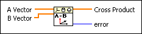
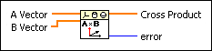
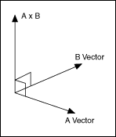
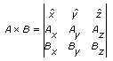

Cross Product VI
Owning Palette: Geometry VIs
Requires: Full Development System
Calculates the cross product of A Vector and B Vector.
 Add to the block diagram Add to the block diagram |
 Find on the palette Find on the palette |
Owning Palette: Geometry VIs
Requires: Full Development System
Calculates the cross product of A Vector and B Vector.
| Add to the block diagram |
Find on the palette |
 |
A Vector specifies the first vector for the cross product. A Vector must contain three elements that specify the x-, y-, and z-coordinate of A Vector. |
|
B Vector specifies the second vector for the cross product. B Vector must contain three elements that specify the x-, y-, and z-coordinate of B Vector. |
 |
Cross Product returns the cross product of A Vector and B Vector. Cross Product contains three elements that specify the x-, y-, and z-coordinate of cross product vector. |
 |
error returns any error or warning from the VI. You can wire error to the Error Cluster From Error Code VI to convert the error code or warning into an error cluster. |
Cross product is perpendicular to A Vector and B Vector. The following figure shows A Vector, B Vector, and Cross product of A x B.

The VI uses the following equation to calculate the cross product of A x B:

Ax, Ay, and Az are x-, y-, and z-coordinates of A Vector. Bx, By, and Bz are x-, y-, and z-coordinates of B Vector. , , and are unit vectors in Euclidean space.